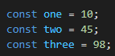

Intro to the course. Information about the mandatories / exam. Expectations.
Github linkNode.js is javaScript in backend instead of frontend.
We normaly see that javaScript runs in a browser on clientside and not backend.
A variable is a “named storage” for data. We can use variables to store goodies, visitors, and other data.
To create a variable in JavaScript, use the let keyword if we want to chance the value, else we can use const to make it not chanceable.
